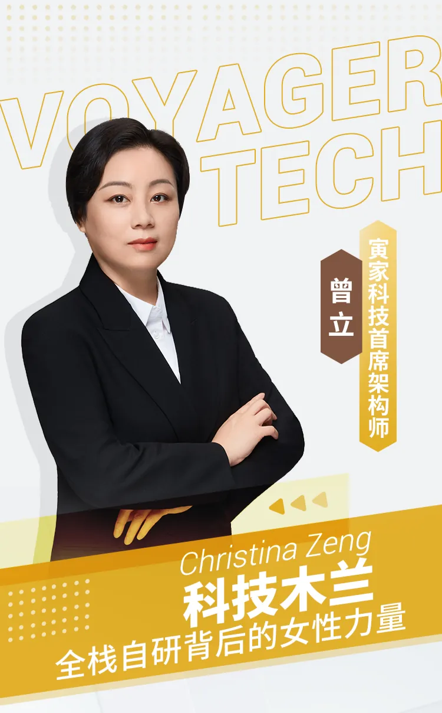
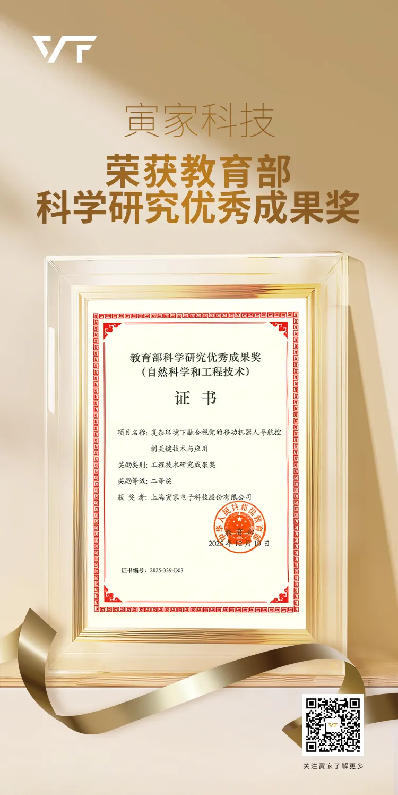
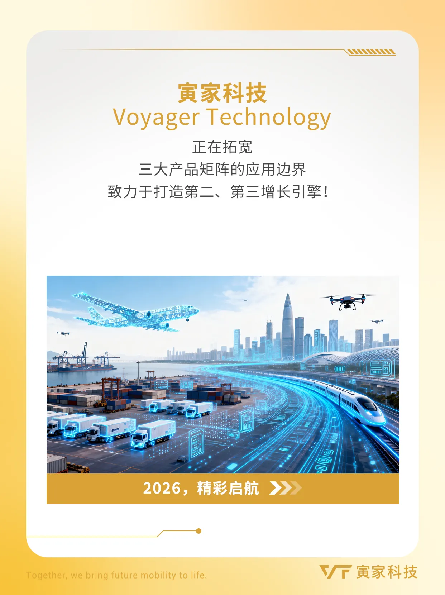
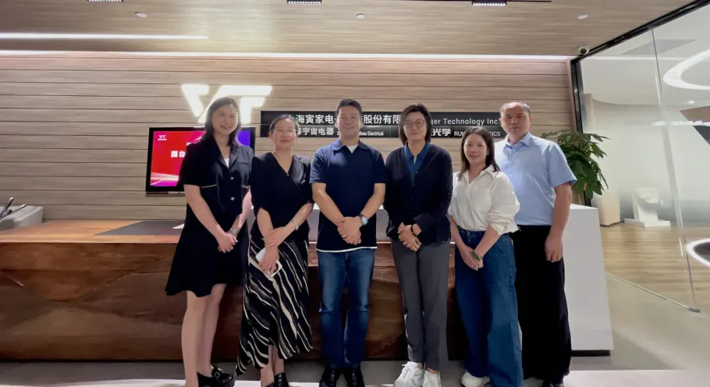
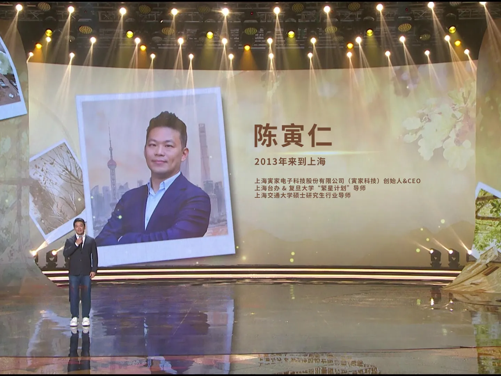

032026
科技木兰 | 走出中国汽车企业的全栈自研之路
百舸争流，时代淘沙 寅家科技的发展史， 是中国本土汽车科技企业 技术自主化、业务全球化的一个缩影。 作为首席架构师，
News Center

百舸争流，时代淘沙 寅家科技的发展史， 是中国本土汽车科技企业 技术自主化、业务全球化的一个缩影。 作为首席架构师，

春华启幕，征程再启 寅家科技以智能科技，驱动新一年的效率革新 我们跨越“地面+低空+作业”三大战略版图 为每一位开工

此前，教育部科学研究优秀成果奖（自然科学和工程技术）获奖名单正式公布。寅家科技凭借“复杂环境下融合视觉的移动机器人导

13年前，海归精英团队初心启航，13年后，寅家科技以【全栈自研】的技术，助力驱动业务破界，产业升级，构建更多业务增长

近日，国台办经济局宗文副局长一行莅临寅家科技开展工作调研，通过实地考察、技术演示与座谈交流，深入了解寅家科技的创新成

8月20日-25日，2025海峡两岸青年汇活动在上海正式举办。本次活动由上海市海峡两岸交流促进会、马英九基金会、上海
Video
“从地面智能到低空经济和具身智能，寅家科技要做的不只是汽车行业，或是某个领域的参与者，我们希望在多元赛道做中国智能出行行业的长期建设者。”